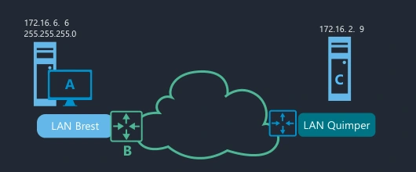
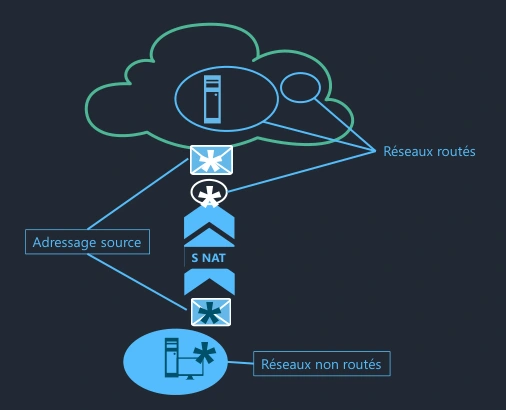
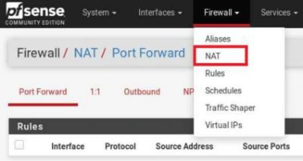
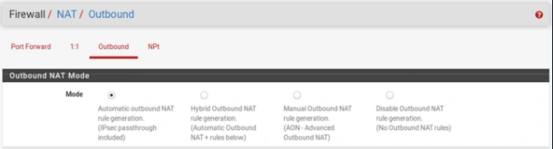
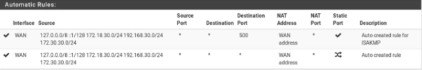
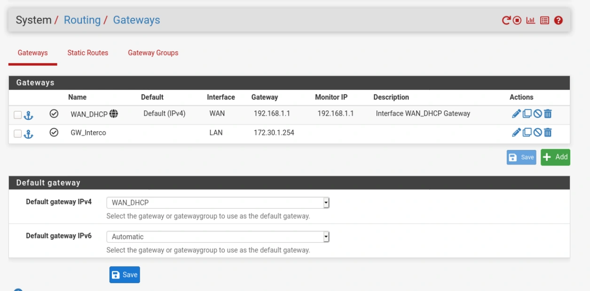
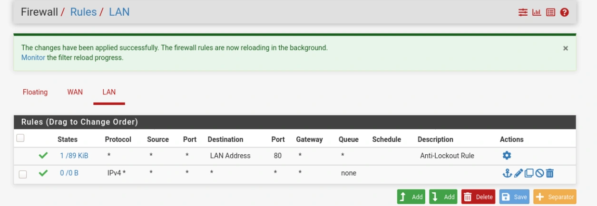
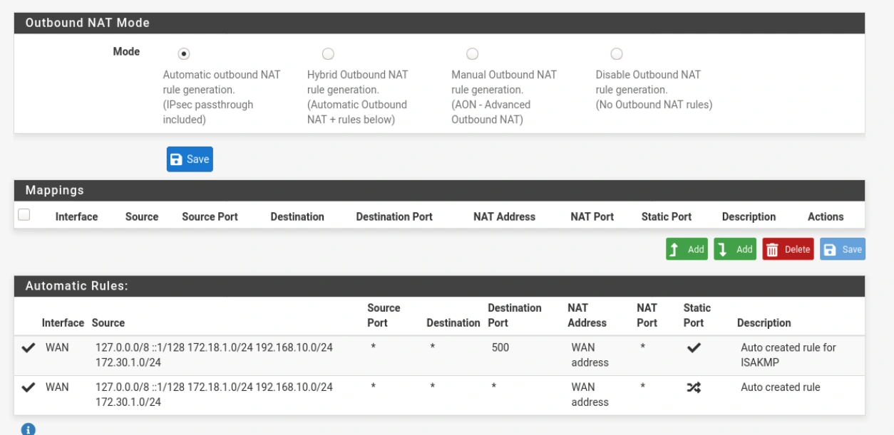

Module 03 — Routage et traduction d’adresses¶
La transcription du support Drive et l’aide pédagogique sont séparées pour rendre leur provenance explicite.
SOURCE DRIVE · TRANSCRIPTION DU SUPPORT
Le contenu des documents du dossier TSSR est transcrit ci-dessous, page par page. Les textes et tableaux sont intégrés à la page Web. Aucun fichier PDF, aucune diapositive entière ni aucune reproduction de page n’est affiché. Seuls des croquis ou visuels isolés et vérifiés peuvent accompagner la transcription. Les versions et les consignes restent celles des supports de formation. Les compléments IA sont conservés dans leur onglet distinct.
Support · Module 03 - Support de cours · 9 pages transcrites
Services réseau en environnement Linux
Module 03 - Routage et traduction d’adresses
Routage et traduction d’adresses
Objectifs
- Définir et mettre en place le routage
- Définir et mettre en place la traduction d’adresses
Routage et traduction d’adresses
Routage
Routage
Définition
- Le routage est le processus permettant la communication entre des hôtes de réseaux logiques distincts.
Routage
Fonctionnement


Hôte A, 172.16.6.6 et masque 255.255.255.0, dans le LAN Brest. Passerelle B. Hôte C, 172.16.2.9, dans le LAN Quimper.
172.16. 6. 6 255.255.255.0
172.16. 2. 9
A C
LAN Brest
LAN Quimper
B
- L’hôte (A), au moyen de son adresse IP d’hôte et de son masque de réseau, détermine si l’hôte distant (C) est sur le même réseau logique que lui.
- Dans le cas contraire, il recherche dans sa propre table de routage si une route permet de joindre le réseau de destination ; il en extrait l’adresse de passerelle (B).
Routage
Fonctionnement
- Il va falloir mettre en place l'ensemble des routes nécessaires à la communication :
- Entre les différents réseaux
- Vers l'extérieur
- Le routage est configuré sur les équipements chargés du routage
- Un équipement terminal (poste de travail, serveurs) utilise le routeur qui correspond à son réseau
Routage
Les routes
- On peut définir plusieurs étendues de routes :
- routes d'hôtes (peu utilisées)
- routes de réseaux (configurées sur les routeurs)
- routes par défaut (configurée sur l'hôte)
Routage
Gestion dynamique
- La commande ip route va permettre de gérer les routes de façon dynamique.
- Afficher les routes :
Transcription du détail du support.
$ ip route
default via 172.16.6.254 dev ens33 proto dhcp metric 100
172.16.6.0/24 dev ens33 proto kernel scope link src 172.16.6.6 metric 100- Ajouter les 3 types de routes :
Transcription du détail du support.
# ip route add 10.11.12.3 via 172.16.6.123
# ip route add 10.56.0.0/16 via 172.16.6.253
# ip route add default via 172.16.6.1Routage
Gestion dynamique
- Changer une route :
Transcription du détail du support.
# ip route change default via 10.9.0.200- Supprimer une route :
Transcription du détail du support.
# ip route del 10.56.0.0/16Routage
Gestion statique
- Pour conserver les routes, il faut les configurer :
- Soit via un export de la commande ip route
- Soit dans le fichier interfaces (à privilégier)
Routage
Activation
- Par défaut, une machine Linux ne route pas les paquets entre les réseaux. Il faut l'activer dans le fichier /etc/sysctl.conf :
Transcription du détail du support.
# vi /etc/sysctl.conf
net.ipv4.ip_forward=1- Il faut ensuite lancer la commande :
Transcription du détail du support.
# sysctl -p- Et vérifier (si 1 : activé, si 0 désactivé) :
Transcription du détail du support.
# sysctl net.ipv4.ip_forward
net.ipv4.ip_forward = 0Routage et traduction d’adresses
Traduction d'adresses
Traduction d’adresses
Tables de routage
- Le routage ne fonctionne que si les réseaux sont dans les tables de routage.
- Dans les cas suivants, ce n'est pas suffisant :
- Réseaux non routables
- Réseaux privés non routables sur Internet
- Réseaux privés non connus des routeurs (pour des maquettes par exemple)
Traduction d’adresses
NAT
- Pour que les machines de ces réseaux puissent accéder à d'autres réseaux (sortir vers Internet), il faut mettre en place une solution de NAT, pour :
- Remplacer l'adresse IP source des paquets : NAT de Source ou SNAT
- Remplacer l'adresse IP de destination : NAT de destination ou DNAT
Traduction d’adresses
NAT


Le croquis montre le SNAT de l’adressage source lors de la sortie des réseaux non routés vers les réseaux routés.
*
Réseaux routés
*
Adressage source
S NAT
*
*
Réseaux non routés
Traduction d’adresses
iptables
- Sous Linux, il est possible d'utiliser des règles d'iptables.
- Il est aussi possible d'utiliser des frameworks comme Shorewall qui vont créer les règles à partir de fichiers de définition des règles.
- Des outils comme PfSense (utilisé dans ce cours) sont des outils avancés de gestion des règles.
Traduction d’adresses
SNAT
- Une fiche annexe est proposée pour la configuration détaillée de pfSense pour mettre en place le SNAT.






Référence du document : 1MQyXuZisBhM7i8ZmSFLw1L-ljYwOeMVh · SHA-256 7747643d654e4e24…
Énoncé · M03 - Enonc‚ du TP1 - Routage · 3 pages transcrites
Le nom du fichier Drive présente une anomalie historique d’encodage. Son nom est conservé ; le titre interne est transcrit dans le document. Les noms et chemins de formation portant le nom de l’éditeur ont été neutralisés. Les adresses numériques et les consignes restent celles de la source.
Services réseau en environnement Linux
Routage
TP 01 du Module 03 – Routage et traduction d’adresses
Avant de démarrer ce TP, il convient d’avoir suivi les vidéos des modules 1 à 3 et d’avoir réalisé les TP proposés.
Durée estimée
1 heure
Énoncé
Objectifs
- Configurer l’adressage réseau sous GNU/Linux Debian.
- Activer le routage et configurer des routes par défaut sous GNU/Linux.
Prérequis
- Toutes les VMs de l’atelier 1 doivent être opérationnelles.
Notes
- Pour toutes les configurations réseau, vous remplacerez num_stag par un chiffre entre 1 et 30, par exemple 10.
Services réseau en environnement Linux
Etape 1 - Ajout de cartes réseau à la machine RouTux
- Dans les propriétés (VMware Workstation) de la machine virtuelle RouTux, lui ajouter des cartes réseau pour qu’elle dispose de 3 cartes réseau.
- Réaliser les associations de cartes réseau suivantes :
| Carte | Connexion | Adresse MAC |
|---|---|---|
| Network Adapter | Custom / VMNet4 | |
| Network Adapter 2 | Custom / VMNet6 | |
| Network Adapter 3 | Custom / VMNet2 |
- Compléter le tableau précédent en renseignant les adresses MAC
Etape 2 - Configuration IPv4 du réseau de RouTux
Nom de l interface
VMNet4
LAN Clients 172.18.num_stag.0 / 24
VMNet2
172.30.num_stag.0 / 24
192.168.num_stag.0 / 24
LAN Serveurs
VMNet6
- Reporter les noms des cartes réseau sur le schéma ci-dessus.
- Configurer l’adressage IP des 3 cartes réseau de RouTux, leur affecter pour numéro d’hôte la dernière adresse d’hôte du réseau.
- S’assurer que RouTux communique bien avec tous les hôtes des réseaux du LAN Clients et LAN Serveurs.
Services réseau en environnement Linux
Etape 3 - Activation du routage sur RouTux
- Activer dynamiquement et durablement le paramètre noyau de routage sur RouTux.
- Configurer la passerelle par défaut des postes des réseaux LAN Client et LAN Serveur.
- Vérifier que les postes du LAN Clients communiquent bien avec les postes du LAN Serveurs
Référence du document : 1qtWj0BV--Chf44LSZJDfW5kokGciPDZ8 · SHA-256 1fc070c91f74bd53…
Énoncé · M03 - Enonc‚ du TP2 - Int‚gration d'un routeur NAT sous PfSense · 3 pages transcrites
Le nom du fichier Drive présente une anomalie historique d’encodage. Son nom est conservé ; le titre interne est transcrit dans le document. Les noms et chemins de formation portant le nom de l’éditeur ont été neutralisés. Les adresses numériques et les consignes restent celles de la source.
Intégration d’un routeur NAT sous pfSense
TP 02 du Module 03 – Routage et traduction d’adresses
Avant de démarrer ce TP, il convient d’avoir suivi les vidéos des modules 1 à 3 et d’avoir réalisé les TP proposés.
Durée estimée
2 heures
Énoncé
Objectifs
- Intégrer une Appliance pfSense et configurer son adressage IP
- Créer des règles de filtrage sur pfSense
- Configurer des routes sous Debian et pfSense
Prérequis
- Toutes les VMs de l’atelier 1 doivent être opérationnelles et l’atelier 2 en place.
- Télécharger l’ISO de pfSense sur le site officiel de pfSense https://www.pfsense.org/download/
Notes
- Pour toutes les configurations réseau, vous remplacerez num_stag par un chiffre entre 1 et 30 par exemple 10.
Etape 1 - Ajout d’une carte VMNet2 à une VM Client
- Dans les propriétés de la machine virtuelle VM Cli-db-10, ajouter une carte réseau pour qu’elle dispose de 2 cartes réseau.
- Associer la carte Network Adapter 2 à la connexion Custom / VMNet2.
- Configurer l’adressage réseau de la nouvelle carte avec l’adresse 172.30.num_stag.10/24
Etape 2 - Ajout d’une machine virtuelle pfSense
- Créer une nouvelle machine virtuelle nommée pfSense.
- Configurer son adressage réseau :
- Son interface réseau LAN correspond à sa carte raccordée au réseau
VMNet2 ; utiliser la première adresse d’hôte utilisable sur ce réseau.
- Son interface WAN doit être liée à sa carte réseau Bridged.
- Utiliser comme adresse IP celle qui est disponible sur votre réseau ; le
WAN pourrait être configuré en DHCP sur votre réseau local par exemple.
- Configurer l’adresse de votre passerelle locale comme adresse de
passerelle par défaut.
- S’assurer que le serveur pfSense communique bien avec le serveur
Internet ayant l’adresse IP 9.9.9.9
- Sur le schéma, le réseau 88.44.22.0/24 correspond au réseau local de notre maquette.
88.44.22.0 / 24
172.30.num_stag.0 / 24 Bridged
9.9.9.9
VMNet2
Passerelle FAI
88.44.22.254
- Se connecter à l’interface web pfSense depuis la VM Cli-db-10 avec l’URL https://IP_interface_LAN (par défaut login : admin, mot de passe : pfsense).
- Ajouter la passerelle et les routes pour joindre les réseaux LAN CLIENT et LAN SERVEUR via RouTux.
- Modifier la règle de filtrage préconfigurée pour IPv4 sur la carte LAN pour autoriser les flux provenant de toutes les sources (source : any).
- S’assurer que les postes des réseaux LAN CLIENT et LAN SERVEUR communiquent avec votre pfSense (via son adresse en 172.30.num_stag.0/24).
Etape 3 - Configuration du routage et de la résolution DNS client
Sur RouTux, configurer l’adresse de votre serveur pfSense comme adresse de passerelle par défaut.
Infrastructure Ecole
Cli-db-10
ftp.fr.debian.org
RouTux
LAN Clients VMNet2
9.9.9.9
LAN Serveurs
Passerelle FAI
88.44.22.254
66.55.44.33
Infrastructure Stagiaire
DNS FAI DEB-S1 DEB-S2
- Vérifier les paramétrages par défaut NAT du routeur pfSense.
- Mode Automatic outbound NAT activé
- Règles Outbound automatiques activées pour tous les sous-réseaux
sources. Quelles sont leurs fonctions ? Pour quels besoins sont-elles configurées ?
- S’assurer que les postes des réseaux LAN CLIENT et LAN SERVEUR communiquent avec le DNS FAI (adresse IP du DNS de votre FAI).
- Configurer tous vos postes sous GNU/Linux afin qu’ils soient client DNS du DNS FAI ou le 9.9.9.9 (sur notre maquette : 66.55.44.33 à remplacer par le DNS de votre FAI).
- Faire un test de liaison de chacun des postes vers ftp.fr.debian.org
- Une fois le serveur pfSense correctement configuré, vous pouvez désactiver la carte réseau connectée au VMNet2 sur la VM Cli-db-10.
Référence du document : 1PQYWZkPS5zjN7us_U4ZDzsAMHDjzW2NC · SHA-256 3f4fc1032340368d…
Correction · M03 - Solution du TP1- Routage · 2 pages transcrites
Les noms et chemins de formation portant le nom de l’éditeur ont été neutralisés. Les adresses numériques et les consignes restent celles de la source.
Correction originale : à consulter après avoir tenté l’exercice.
Services réseau en environnement Linux
Routage
TP 01 du Module 03 – Routage et traduction d’adresses
Avant de démarrer ce TP, il convient d’avoir suivi les vidéos des modules 1 à 3 et d’avoir réalisé les TP proposés.
Durée estimée
1 heure
Solution
Etape 1 - Ajout de cartes réseau à la machine RouTux
- Rajouter les interfaces réseau dans VMware. Veiller à bien les mettre dans le même ordre que sur le tableau.
Pour récupérer les adresses MAC, récupérer la ligne link/ether avec # ip a ou # ip link
Etape 2 - Configuration IPv4 du réseau de RouTux
Nom de l interface
VMNet4
LAN Clients 172.18.num_stag.0 / 24
VMNet2
172.30.num_stag.0 / 24
192.168.num_stag.0 / 24
LAN Serveurs
VMNet6
Configuration statique à faire :
# vi /etc/network/interfaces
# LAN Clients
auto ens33
iface ens33 inet staticServices réseau en environnement Linux
address 172.18.X.254
netmask 255.255.255.0
# LAN Serveurs
auto ens36
iface ens36 inet static
address 192.168.X.254
netmask 255.255.255.0
# Interco
auto ens37
iface ens37 inet static
address 172.30.X.254
netmask 255.255.255.0Ne pas oublier de redémarrer le réseau : # systemctl restart networking.service
Etape 3 - Activation du routage sur RouTux
Pour activer le routage :
# vi /etc/sysctl.confnet.ipv4.ip_forward=1Décommenter la ligne
# sysctl -pPour rajouter les gateway sur les serveurs :
Sur cli-deb-10
# nmcli connection modify Wired\ connection\ 1 ipv4.gateway 172.18.X.254+ Désactivation/Activation connexion via nmtui ?
Ou via l’interface graphique
Sur deb-s1
# vi /etc/network/interfacesAjouter la directive pour ens33 :
gateway 192.168.X.254Idem sur deb-s2
Pour vérifier depuis deb-s1 par exemple, pinguer cli-db-10. Si cela fonctionne, cela signifie que le routage est opérationnel sur RouTux.
Référence du document : 1z8PsvT5YcJSkBP-cJXWYJVyc04C0RUp4 · SHA-256 6c5a45e9a7350964…
Correction · M03 - Solution du TP2 - Int‚gration d'un routeur NAT sous PfSense · 5 pages transcrites
Le nom du fichier Drive présente une anomalie historique d’encodage. Son nom est conservé ; le titre interne est transcrit dans le document. Les noms et chemins de formation portant le nom de l’éditeur ont été neutralisés. Les adresses numériques et les consignes restent celles de la source.
Correction originale : à consulter après avoir tenté l’exercice.
Intégration d’un routeur NAT sous pfSense
TP 02 du Module 03 – Routage et traduction d’adresses
Avant de démarrer ce TP, il convient d’avoir suivi les vidéos des modules 1 à 3 et d’avoir réalisé les TP proposés.
Durée estimée
2 heures
Solution
Etape 1 - Ajout d’une carte VMNet2 à une VM Client
- On rajoute ici une seconde carte réseau sur la machine Cli-Db-10 pour accéder à l’interface Web de pfSense.
- Rajouter la carte sur le VM Net2 dans VMware et configurer son IP avec Network Manager.
- Il est conseillé de désactiver la première interface le temps de la configuration de pfSense, d’activer la seconde et la configurer. Les interfaces graphiques ne supportent pas tellement les multi-cartes réseau.
Etape 2 - Ajout d’une machine virtuelle pfSense
- Configurer dans le bon ordre les interfaces pour pfSense.
Conseil pour le WAN : mettre en DHCP sur votre réseau local.
88.44.22.0 / 24
172.30.num_stag.0 / 24 Bridged
9.9.9.9
VMNet2
Passerelle FAI
88.44.22.254
- Se connecter à l’interface web pfSense depuis la VM Cli-db-10 avec l’URL
https://IP_interface_LAN (par défaut login : admin, mot de passe : pfsense)
NB : si l’interface ne fonctionne pas en HTTPS :
1. Reboot de pfSense
2. Accès en HTTP
Configurer la passerelle pour l’interface LAN
Menu Système / Routage, onglet Passerelles
Ajouter une passerelle
Interface : LAN
Nom : GW_Interco
Passerelle : 172.30.X.254
Désactiver la surveillance
Enregistrer
Appliquer les modifications
Configurer la route vers le LAN Clients
Menu Système / Routage, onglet Routes statiques
Ajouter une route
Réseau de destination = 172.18.X.0 /24
Passerelle = GW_Interco - 172.30.X.254
Enregistrer
Appliquer les modifications
Configurer la route vers le LAN Serveurs
Ajouter une route
Réseau de destination = 192.168.X.0 /24
Passerelle = GW_Interco - 172.30.X.254
Enregistrer
Appliquer les modifications
Voici les captures d’écran des différents menus :


Il faut aussi autoriser le LAN à aller vers le pfSense et vers l’extérieur dans le firewall.


Etape 3 - Configuration du routage et de la résolution DNS client
Infrastructure Ecole
Cli-db-10
ftp.fr.debian.org
RouTux
LAN Clients VMNet2
9.9.9.9
LAN Serveurs
Passerelle FAI
88.44.22.254
66.55.44.33
Infrastructure Stagiaire
DNS FAI DEB-S1 DEB-S2
Sur Routux :
# vi /etc/network/interfaces- Ajouter la directive suivante pour la carte ens37/vmnet2
gateway 172.30.X.1 # systemctl restart networking.serviceConfiguration sur pfSense du SNAT :


- Quelles sont leurs fonctions ? Pour quels besoins sont-elles configurées ?
- Source NAT pour tous les paquets sortant de l’interface publique => IP source
remplacée par IP publique carte WAN
- Attendre les ressources dans le réseau public
- DNS FAI
- Dépôt Debian ftp.fr.debian.org
- Une fois le NAT activé depuis un Deb-S1 par exemple, pinguer une IP
extérieure comme la 9.9.9.9
- Sur toutes les machines, de façon provisoire, utiliser le serveur DNS du FAI ou le
9.9.9.9
Référence du document : 1jUH0IN6TnZEoNPYOYzd07FVMK_hQueno · SHA-256 ba2ed8fd7a5075db…
Complément IA / externe au cours — fiche pédagogique du portail
Cette fiche contient une reformulation et des aides d’apprentissage rédigées par IA. Elle est distincte de la transcription des documents du Drive et ne la remplace pas. Les schémas de synthèse de cette fiche sont des illustrations IA / externes au cours, sauf les captures explicitement attribuées à un document source.
Le cours optimisé reprend la leçon et ses manipulations. Les précisions et exemples complémentaires sont indiqués dans le texte. L’onglet Original donne accès aux transcriptions des supports.
Du réseau de départ au réseau de destination¶
Le routage relie des réseaux logiques. L’hôte A du support compare son adresse et son masque à la destination C. A est dans le LAN Brest avec 172.16.6.6/24. C est dans le LAN Quimper avec 172.16.2.9. A consulte sa table de routage et remet le paquet à la passerelle B si elle fournit le prochain saut adapté. Le réseau distant doit aussi disposer d’un chemin de retour.
| Étendue de la route | Exemple de destination | Usage |
|---|---|---|
| Hôte | 10.11.12.3/32 |
Atteindre une adresse précise |
| Réseau | 10.56.0.0/16 |
Atteindre un ensemble d’adresses |
| Défaut | default |
Traiter les destinations sans route plus spécifique |
Le choix commence par le préfixe le plus spécifique. Une métrique et d’autres règles de routage départagent des chemins selon la configuration. Les routes connectées apparaissent lorsqu’une interface possède une adresse et un préfixe actifs.
Lire et modifier les routes¶
ip route show
ip route get 192.168.10.11
ip route add 10.56.0.0/16 via 172.16.6.253
ip route del 10.56.0.0/16
Les deux dernières lignes reprennent le réseau de l’exemple source. Elles supposent le prochain saut accessible dans le scénario choisi. Le support montre aussi l’ajout d’une route d’hôte, le changement et la suppression de la route par défaut. Les modifications apportées avec ip route concernent l’état courant. Pour la persistance, utiliser la configuration réseau de la machine, puis relire la route obtenue après application.
Faire de RouTux un routeur IPv4¶
Associer ses trois cartes à VMNet4, VMNet6 et VMNet2. La correction utilise ens33, ens36 et ens37. Vérifier les MAC avant de reprendre ces noms. Chaque carte reçoit la dernière adresse utilisable de son /24.
| Interface de l’exemple | Segment | Adresse RouTux |
|---|---|---|
| ens33 | Clients | 172.18.X.254/24 |
| ens36 | Serveurs | 192.168.X.254/24 |
| ens37 | Interconnexion | 172.30.X.254/24 |
Le paramètre net.ipv4.ip_forward=1 autorise le noyau à transmettre des paquets IPv4 entre interfaces. La lecture du paramètre doit rendre 1. La capture source affichant 0 illustre l’état désactivé. Pour le test dynamique, sysctl -w net.ipv4.ip_forward=1 applique la valeur. Pour la persistance, le corrigé la renseigne dans /etc/sysctl.conf et exécute sysctl -p. Les règles de filtrage applicables au trafic transmis restent à vérifier. Documentation du noyau Linux.
Les postes du LAN Clients utilisent 172.18.X.254 comme passerelle. Ceux du LAN Serveurs utilisent 192.168.X.254. Tester les adresses de RouTux depuis chaque segment, puis tester de Cli-db-10 vers les serveurs et en sens inverse. Vérifier les adresses de retour avant de modifier le NAT.
Traduction et filtrage¶
SNAT transforme l’adresse source. Le cas de sortie du laboratoire utilise l’adresse de l’interface WAN de pfSense pour les connexions dont la source se trouve dans les réseaux de la maquette. DNAT transforme l’adresse de destination, comme dans une redirection vers un service interne. La table de routage choisit le chemin et le pare-feu contrôle quels flux sont admis. La traduction intervient à une étape du traitement des paquets. Le support cite iptables, Shorewall et pfSense.
Intégrer pfSense sur l’interconnexion¶
Le TP ajoute temporairement 172.30.X.10/24 à Cli-db-10 sur VMNet2 pour configurer l’appliance. L’interface LAN de pfSense prend 172.30.X.1/24. Son WAN est en pont avec une adresse du réseau amont et la passerelle correspondante. L’interface Web est atteinte depuis le segment LAN du laboratoire.
- Créer
GW_Intercosur LAN vers172.30.X.254, l’adresse de RouTux. - Ajouter les routes de retour vers
172.18.X.0/24et192.168.X.0/24via cette passerelle. - Appliquer la règle LAN IPv4 demandée pour le laboratoire et relire sa source, sa destination et sa position.
- Configurer la sortie de RouTux via
172.30.X.1sur VMNet2. - Examiner les règles de NAT sortant automatiques sur WAN. Les réseaux connus par routes statiques entrent dans ce calcul.
- Tester une destination par adresse, puis la résolution d’un nom avec le DNS du laboratoire ou le résolveur de test. Désactiver la carte temporaire du client après validation.
Le corrigé montre plusieurs interfaces et un accès Web de dépannage. Le complément consiste à conserver la correspondance LAN/WAN et à observer la passerelle effectivement sélectionnée. Une source any appartient au scénario isolé. Les tests séparent route de retour, permission du flux, traduction et DNS. Routes statiques pfSense, NAT sortant pfSense.
Schéma explicatif complémentaire¶
Illustration IA / externe au cours — schéma pédagogique de synthèse.
Autoévaluation¶
- Quelle valeur permet la transmission IPv4 sur RouTux ?
- Quelle adresse pfSense utilise-t-il pour joindre les deux LAN derrière RouTux ?
- Quel champ est modifié par SNAT ?
Réponses
net.ipv4.ip_forward=1.172.30.X.254sur VMNet2.- L’adresse source du paquet, avec éventuellement une translation de port selon la règle.